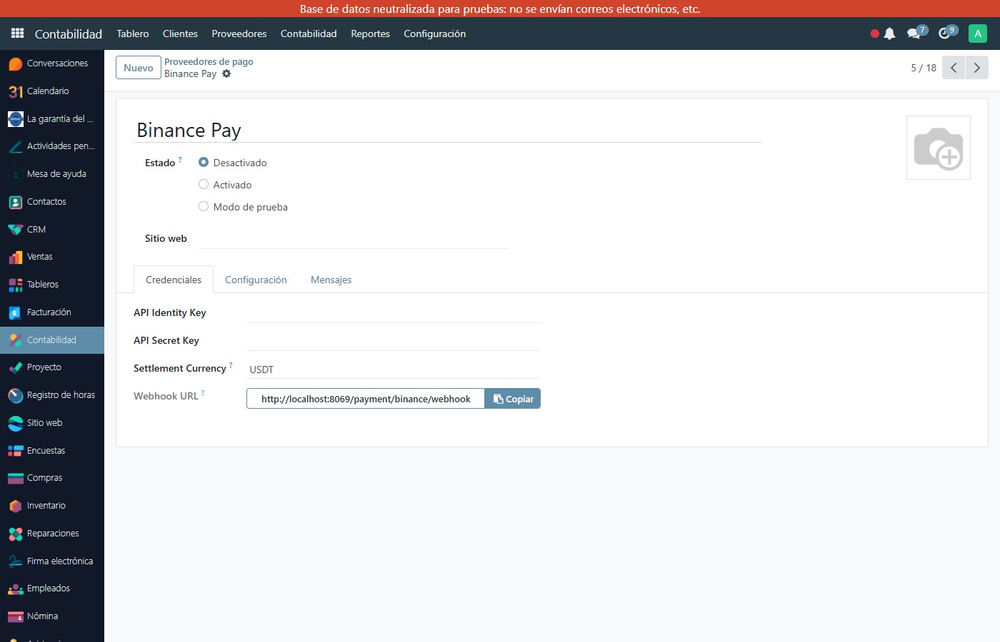

Integra Binance Pay en tu Odoo 17. Acepta USDT, BTC, ETH, BNB y más de 50 criptomonedas en tu tienda online y facturas de cliente. Cobros instantáneos sin intermediarios bancarios.
Acepta USDT, BTC, ETH, BNB, FDUSD y todas las monedas soportadas por Binance Pay. Tus clientes pagan con su wallet Binance, tú recibes en la moneda que prefieras.
El botón 'Pagar con Binance Pay' aparece automáticamente en el checkout de tu tienda online. Experiencia de compra fluida y profesional.
Genera órdenes de pago Binance Pay directamente desde las facturas en Odoo. Ideal para cobros B2B en criptomonedas sin salir del ERP.
El pago se confirma automáticamente vía webhook de Binance Pay. La factura se marca como pagada de inmediato sin acción manual.
Configura en qué moneda quieres recibir los fondos: USDT, USDC, BTC, BNB, ETH o FDUSD.
Prueba la integración en modo sandbox antes de activarla. Credenciales separadas para API Identity Key y API Secret Key de Binance Business.
En Contabilidad → Proveedores de pago → Binance Pay, ingresa tu API Identity Key y API Secret Key de Binance Business.
Cambia el estado a 'Activado' y registra el Webhook URL en tu panel de Binance Business para recibir confirmaciones de pago.
Tus clientes ven el botón Binance Pay en el checkout o en la factura. Al pagar, la factura se confirma automáticamente.
Binance Pay en la lista de proveedores de pago de Odoo 17 — listo para activar junto a Stripe, PayPal y más

Configuración de Binance Pay — API Identity Key, Settlement Currency USDT y URL del Webhook automático